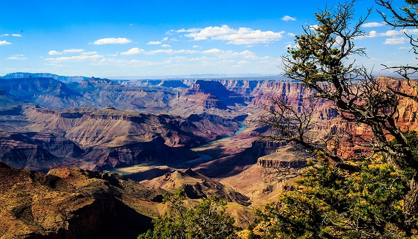

The Grand Canyon is a steep-sided canyon carved by the Colorado River in Arizona, United States. The Grand Canyon is 446 km long, up to 29 km wide and attains a depth of over 1,857 meters.
The canyon and adjacent rim are contained within Grand Canyon National Park, the Kaibab National Forest, Grand Canyon–Parashant National Monument, the Hualapai Indian Reservation, the Havasupai Indian Reservation and the Navajo Nation. President Theodore Roosevelt was a major proponent of the preservation of the Grand Canyon area and visited it on numerous occasions to hunt and enjoy the scenery.
Nearly two billion years of Earth's geological history have been exposed as the Colorado River and its tributaries cut their channels through layer after layer of rock while the Colorado Plateau was uplifted. While some aspects about the history of incision of the canyon are debated by geologists, several recent studies support the hypothesis that the Colorado River established its course through the area about 5 to 6 million years ago. Since that time, the Colorado River has driven the down-cutting of the tributaries and retreat of the cliffs, simultaneously deepening and widening the canyon.
